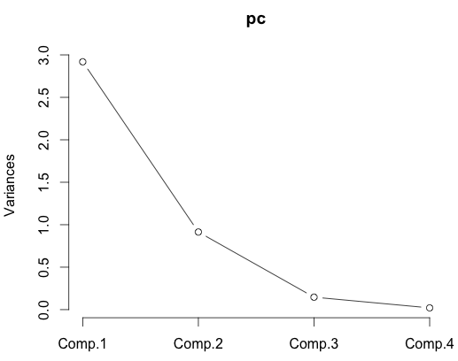
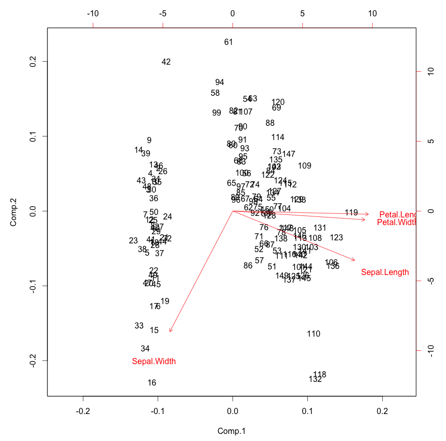
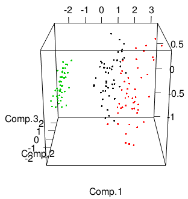
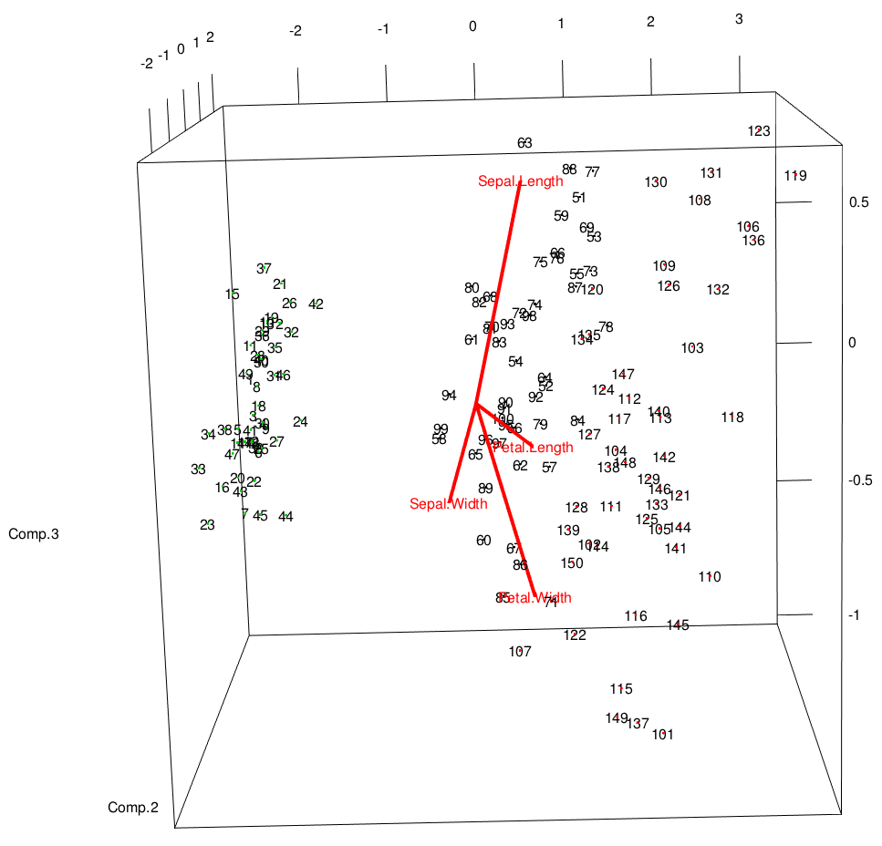
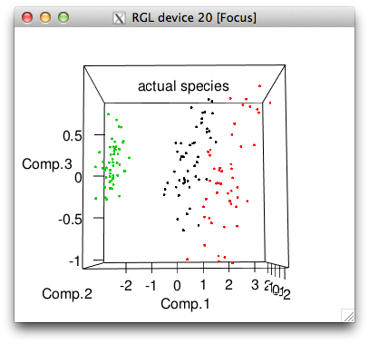
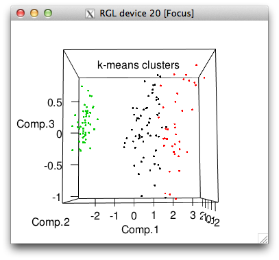
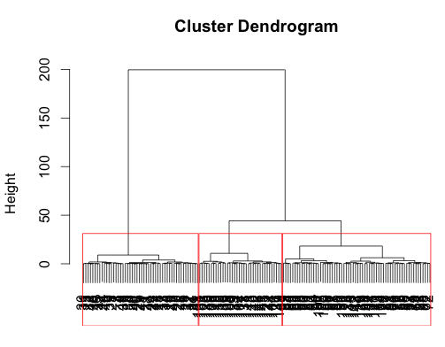

PCA, 3D Visualization, and Clustering in R
Sunday February 3, 2013
It's fairly common to have a lot of dimensions (columns, variables) in your data. You wish you could plot all the dimensions at the same time and look for patterns. Perhaps you want to group your observations (rows) into categories somehow. Unfortunately, we quickly run out of spatial dimensions in which to build a plot, and you probably don't want to do clustering (partitioning) by hand.
This example will use the iris data set available in R, which has
four numeric variables. This is not very many, and the data is pretty
nicely behaved, so the results of Principal Component Analysis and
clustering will not be terribly bad. You won't always get decent
results when you try to arbitrarily reduce the dimensionality of your
data to three just so you can make pretty graphs. But it sure is fun -
and it can be useful, both for exploring data and communicating
results.
Let's set up and look at our data:
data(iris)
# this is a little tweak so that things line up nicely later on
iris$Species <- factor(iris$Species,
levels = c("versicolor","virginica","setosa"))
head(iris)
# Sepal.Length Sepal.Width Petal.Length Petal.Width Species
# 1 5.1 3.5 1.4 0.2 setosa
# 2 4.9 3.0 1.4 0.2 setosa
# 3 4.7 3.2 1.3 0.2 setosa
# 4 4.6 3.1 1.5 0.2 setosa
# 5 5.0 3.6 1.4 0.2 setosa
# 6 5.4 3.9 1.7 0.4 setosaWe might take a look at how correlated the four variables are.
round(cor(iris[,1:4]), 2)
# Sepal.Length Sepal.Width Petal.Length Petal.Width
# Sepal.Length 1.00 -0.12 0.87 0.82
# Sepal.Width -0.12 1.00 -0.43 -0.37
# Petal.Length 0.87 -0.43 1.00 0.96
# Petal.Width 0.82 -0.37 0.96 1.00Sepal length, petal length, and petal width all seem to move together pretty well (Pearson's r > 0.8) so we could possibly start to think that we can reduce dimensionality without losing too much.
We'll use princomp to do the PCA here. There are many alternative
implementations for this technique. Here I choose to use the
correlation matrix rather than the covariance matrix, and to generate
scores for all the input data observations. (My only reference is
SAS help, but basically it seems that using the correlation matrix
sort of helps you worry less (vs. using the covariance matrix) about
normalizing all your variables perfectly.)
pc <- princomp(iris[,1:4], cor=TRUE, scores=TRUE)The results are stored in pc and we can examine them in a variety of
ways.
summary(pc)
# Importance of components:
# Comp.1 Comp.2 Comp.3 Comp.4
# Standard deviation 1.7083611 0.9560494 0.38308860 0.143926497
# Proportion of Variance 0.7296245 0.2285076 0.03668922 0.005178709
# Cumulative Proportion 0.7296245 0.9581321 0.99482129 1.000000000Here we see that the first three components bring our cumulative proportion of variance to 0.99 already, which is nothing to sneeze at. You can get a similar sort of idea from a scree plot.
plot(pc, type="lines")
Heck, in this case you might even think that just two factors is enough. We can certainly plot in two dimensions. Here is a biplot.
biplot(pc)
This is pretty interesting. You can see how the original variables
behave relative to our principal components, which is sort of as we
saw in the correlation matrix above. We only see in the directions of
the first two principal components, however. In the case of the iris
data we can already see pretty clear clustering here.
The loadings calculated by princomp are eigenvectors of the
correlation (or covariance, your choice) matrix and stored in the
loadings of the results (pc$loadings in this example). You may
prefer to use singular value deomposition for your PCA, in which case
you can check out prcomp instead of princomp.
Let's start to plot in three dimensions. We'll use the excellent
rgl package, which you
can install with install.packages("rgl") if you haven't already.
We'll plot the scores along the first three principal components for
each iris, and color by species.
library(rgl)
plot3d(pc$scores[,1:3], col=iris$Species)
That plot will be interactive: click and drag to rotate, right click and drag or use the mouse wheel to zoom.
It doesn't seem like there's a pre-made function for this, but we can sort of hack together a 3D equivalent to the biplot by adding to our initial 3D plot. This looks reasonably decent:
text3d(pc$scores[,1:3],texts=rownames(iris))
text3d(pc$loadings[,1:3], texts=rownames(pc$loadings), col="red")
coords <- NULL
for (i in 1:nrow(pc$loadings)) {
coords <- rbind(coords, rbind(c(0,0,0),pc$loadings[i,1:3]))
}
lines3d(coords, col="red", lwd=4)
You really need to interact with this plot to see how everything is laid out. It's very much like the biplot from above, but the eigenvectors are drawn on the same axes as the data.
You may also be interested in doing some unsupervised clustering. There are a bunch of ways to do this. In this case we have a "correct" clustering - the three species in the data set - so we can see how close to correct we are. Here's the popular k-means method:
set.seed(42)
cl <- kmeans(iris[,1:4],3)
iris$cluster <- as.factor(cl$cluster)The random seed is set for reprodicibility and then we save the
cluster assignments from k-means as a new column in the iris data
frame. We can take a look at how well this works, visually and by
tabulation.
plot3d(pc$scores[,1:3], col=iris$cluster, main="k-means clusters")
plot3d(pc$scores[,1:3], col=iris$Species, main="actual species")

with(iris, table(cluster, Species))
# Species
# cluster versicolor virginica setosa
# 1 48 14 0
# 2 2 36 0
# 3 0 0 50So k-means got all the setosa's perfectly but made some mistakes with the other two species, picking far too many flowers for its cluster 1.
You may want to do some sort of hierarchical clustering. Here's one way. (See also the Quick-R page on clustering.)
di <- dist(iris[,1:4], method="euclidean")
tree <- hclust(di, method="ward")
iris$hcluster <- as.factor((cutree(tree, k=3)-2) %% 3 +1)
# that modulo business just makes the coming table look nicer
plot(tree, xlab="")
rect.hclust(tree, k=3, border="red")
In this case, the result is very similar to the result from k-means, but just slightly better, catching all the versicolor:
with(iris, table(hcluster, Species))
# Species
# hcluster versicolor virginica setosa
# 1 50 14 0
# 2 0 36 0
# 3 0 0 50Of course with any clustering, you should probably think about how your variables are scaled before you start applying clustering methods, which I've just neglected here.
There's much more you can do, with many more options and alternative techniques. Have fun!
This post was originally hosted elsewhere.